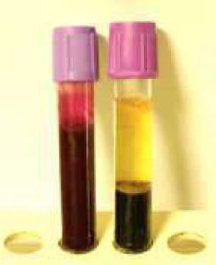
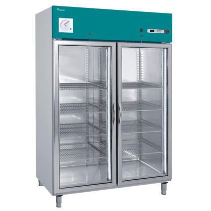
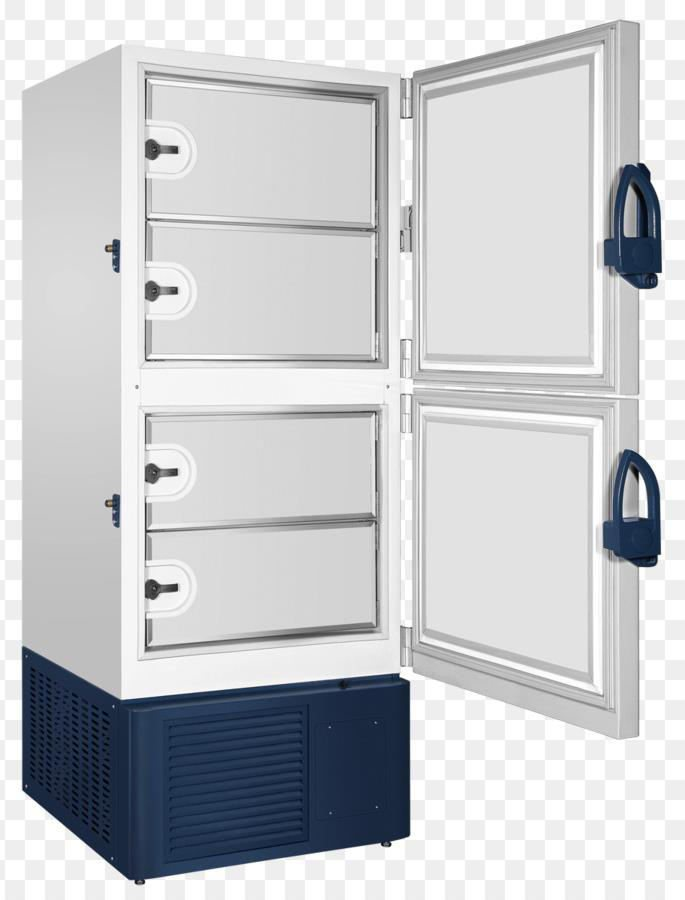
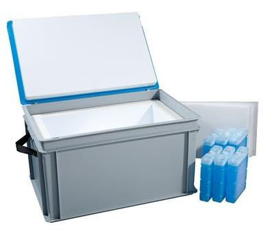
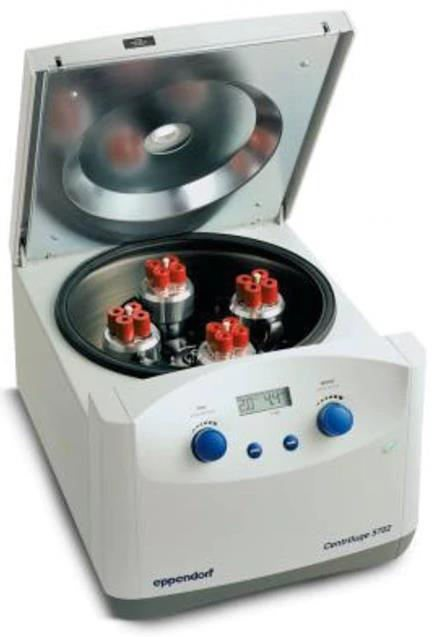
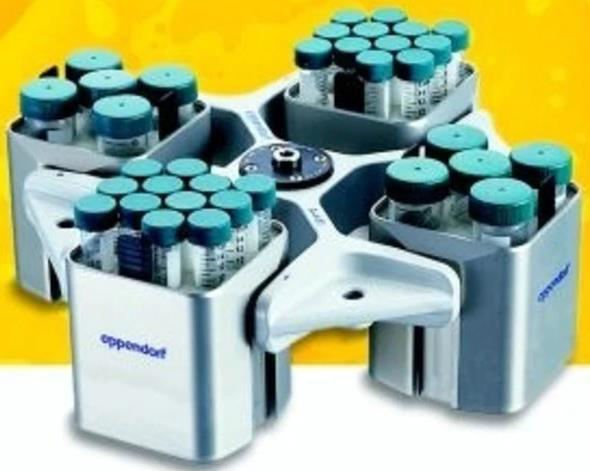

Échantillons et phase pré-analytique
Les échantillons
| Type | Ce que c'est | Tube |
|---|---|---|
| Sang total | cellules et plasma | anticoagulant (EDTA, citrate, héparine) |
| Plasma | liquide du sang anticoagulé, centrifugé | EDTA, citrate ou héparine |
| Sérum | liquide après coagulation complète, centrifugé | tube sec ou à gel |

Le sérum a perdu les protéines de la coagulation (consommées par le caillot) : la coagulation se dose sur plasma citraté, la numération sur sang total.
Urines : premier jet (cytologie), milieu de jet après toilette (ECBU), stériles (cathétérisme, ponction sus-pubienne), 24 heures (bilan métabolique). Autres : selles, crachats, LCR (stérile, immédiat), liquides de ponction, moelle, biopsies, écouvillons.
Prélever
Avant : vérifier la prescription, identifier le patient, jeûne de 8 à 12 h (bilan lipidique et glycémique), noter les traitements, préparer des tubes non périmés (la couleur du bouchon dit l'additif).
Pendant :
- garrot moins d'une minute (sinon hémolyse et stase) ;
- tube citrate rempli jusqu'au trait de jauge ;
- 8 à 10 retournements doux, jamais secouer.
Après : étiqueter au chevet, tout de suite, jamais à l'avance ni hors de la présence du patient ; aiguilles au collecteur DASRI jaune ; noter date et heure.
Identifier et tracer
Mentions obligatoires (CSP, art. D. 6211-2) :
- Patient : nom de naissance, nom d'usage, prénoms, date de naissance, sexe, numéro unique.
- Préleveur : nom, qualité, numéro RPPS ou ADELI.
- Échantillon : examen, date et heure, conditions (jeûne, traitement).
Chaîne de traçabilité : prélèvement → transport → réception → enregistrement → analyse → résultat → archivage. Les dérivés (ADN, aliquotes) restent liés au tube d'origine. Données gardées au moins 5 ans. L'ISO 15189 exige une procédure d'identification et la gestion des non-conformités.
Règle absolue : non identifié ou mal identifié, jamais analysé. On le détruit et on refait le prélèvement.
Conserver et transporter
| Température | Usage |
|---|---|
| 15 à 25 °C | transport court, hématologie, cytologie |
| +2 à +8 °C | courte durée : biochimie, sérologie, ECBU |
| −20 °C | moyenne durée : aliquotes de sérum ou plasma |
| −70 à −80 °C | longue durée : biologie moléculaire, virologie |
| −196 °C (azote liquide) | cellules et tissus, PMA |
Les cas particuliers à connaître :
- Gaz du sang : glace, analyse en moins de 30 min.
- Hémoculture : 35 à 37 °C, jamais au froid.
- Coagulation : ambiante, moins de 4 h.
- Ammoniémie : glace, immédiat.
- Urines : 2 h, sinon +4 °C au plus 24 h.
Transport : triple emballage (UN 3373) et bordereau séparé des tubes. Éviter les cycles de congélation et décongélation.
Réfrigérateurs et congélateurs
Classes : conservateurs 2 à 8 °C, basse température −15 à −35 °C, ultra-basse température −60 à −86 °C. Un réfrigérateur ne fabrique pas de froid : il déplace la chaleur.
Repères : 1834, Jacob Perkins, première machine frigorifique (éther, ammoniac) ; 1858, Charles Tellier, machine à ammoniac liquéfié ; 1922, réfrigérateur à absorption (Suède).



Entretien : intérieur et joint chaque trimestre (test de la bande de papier de 5 cm), condenseur et dégivrage tous les six mois. Alarmes à ± 10 % de la température de fonctionnement. Prise directe avec terre, jamais de multiprise.
Centrifuger
La centrifugation sépare selon la densité et la taille. La force dépend de la vitesse et du rayon : on l'exprime en × g.
\[ \text{RCF} = 1{,}118 \times 10^{-5} \times r\,(\text{cm}) \times N^2\,(\text{tr/min}) \]- Sérum ou plasma : 2 000 à 2 500 × g, 10 à 15 min ; pour le sérum, attendre 30 à 60 min de coagulation.
- PBMC : Ficoll (1,077 g/mL), 400 à 450 × g, 30 min, frein désactivé.
- Aliquotes de 200 à 500 µL.
- Toujours équilibrer : masses égales face à face.



Rotors : angle fixe (20 à 45°, usage courant), godets oscillants (meilleure résolution), verticaux (temps court), quasi verticaux (gradients). Jamais ouvrir en marche ni freiner à la main ; désinfecter avant toute intervention. Préventif : chaque mois (propreté, couvercle, joints), chaque année (commandes, température, minuteur à ± 10 %, frein).
Les erreurs pré-analytiques
60 à 70 % des erreurs totales. Coût de la non-qualité : environ 25 % du budget des consommables de prélèvement. Cause principale : la formation insuffisante.
- Citrate sous-rempli : TP et TCA faussés.
- Garrot de plus d'une minute : protéines, potassium, lactate augmentés.
- Délai avant centrifugation : glucose diminué (consommé par les cellules).
- Lumière : bilirubine, vitamines, porphyrines dégradées.
Prévention : formation, procédures, audits et indicateurs (taux de rejets), traçabilité informatisée, matériel adapté, communication.
Questions d'examen
Réponds dans ta tête, puis touche « Voir la réponse ».
1. Quelle différence entre plasma et sérum ?
Voir la réponse
Plasma : liquide du sang anticoagulé, centrifugé.
Sérum : liquide qui reste après coagulation complète, centrifugé : il n'a plus les protéines de la coagulation.
2. Donne l'ordre de remplissage des tubes (CLSI).
Voir la réponse
Hémoculture, tube sec, citrate, héparine, EDTA, fluorure, autres additifs.
3. Pourquoi le garrot doit-il rester moins d'une minute ?
Voir la réponse
Au-delà, la stase veineuse augmente protéines, potassium et lactate, et il y a un risque d'hémolyse.
4. Quelle est l'erreur majeure d'étiquetage à éviter ?
Voir la réponse
Étiqueter les tubes à l'avance, ou hors de la présence du patient.
5. Un tube arrive mal identifié. Que fait-on ?
Voir la réponse
On ne l'analyse pas.
On le détruit selon la procédure.
On demande un nouveau prélèvement.
6. Comment conserver une hémoculture ? Un gaz du sang ?
Voir la réponse
Hémoculture : 35 à 37 °C, jamais au réfrigérateur.
Gaz du sang : dans la glace, analysé en moins de 30 minutes.
7. Quels sont les quatre éléments du circuit frigorifique, et le rôle de chacun ?
Voir la réponse
Évaporateur : absorbe la chaleur de l'enceinte, le fluide se vaporise.
Compresseur : comprime la vapeur de BP à HP.
Condenseur : cède la chaleur à la pièce, le fluide redevient liquide.
Détendeur : fait chuter la pression.
8. Un rotor de 10 cm tourne à 4 000 tr/min. Quelle force centrifuge relative ?
Voir la réponse
\( \text{RCF} = 1{,}118 \times 10^{-5} \times r \times N^2 \)
\( \text{RCF} = 1{,}118 \times 10^{-5} \times 10 \times 4\,000^2 \)
\( \text{RCF} \approx 1\,789 \times g \)
9. Pourquoi centrifuge-t-on les PBMC frein désactivé ?
Voir la réponse
Un freinage brutal perturberait le gradient de Ficoll, et l'anneau de cellules à l'interface se mélangerait.
10. Quelle part des erreurs vient du pré-analytique, et quelle en est la cause principale ?
Voir la réponse
60 à 70 % des erreurs totales.
Cause principale : une formation insuffisante du personnel, même expérimenté.